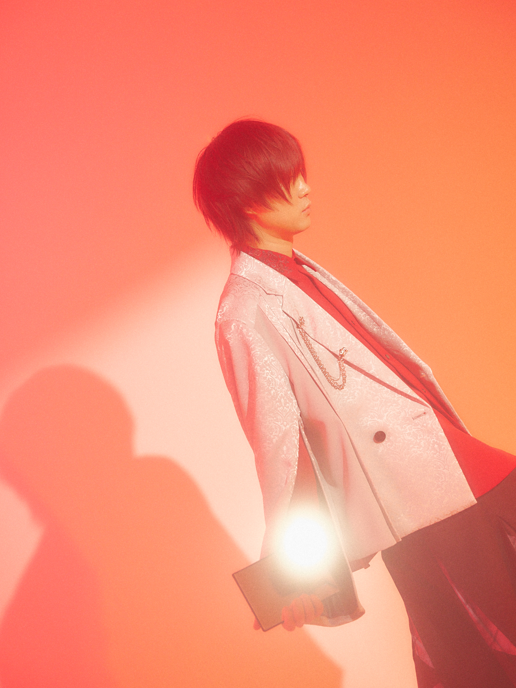
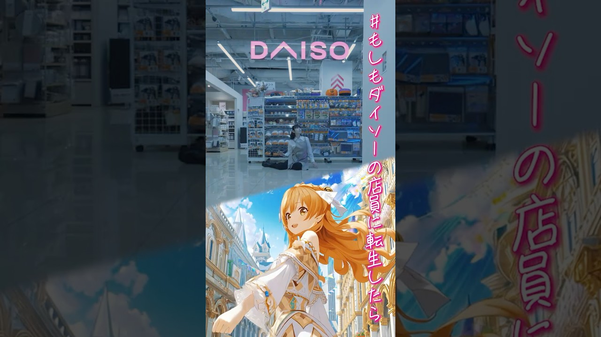
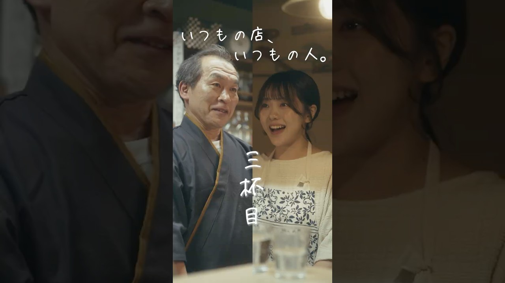

01. COVER
GATE CHANNEL & WORKS
FOR CORPORATE CLIENTS
映画祭15冠の監督 ×
企業SD出演数トップクラスの女優。
この二人が、御社のドラマを作ります。
SHORT DRAMA PRODUCTION SERVICE
GATEだからできる——監督・俳優・脚本・撮影・編集まで
中間マージンゼロのワンストップ制作
PROPOSAL — 2026.04
02. THE DUO
GATEのショートドラマは、
この二人が作ります。
ショートドラマは「誰が作るか」がすべてです。

DIRECTOR / WRITER / EDITOR
相馬 寿樹
TOSHIKI SOMA
脚本・監督・編集を一人で完結させる
映像制作のオールラウンダー。
映画『陽だまりの花』で国内外映画祭グランプリ含む15の賞を受賞。那須国際短編映画祭では史上初・最年少で監督特集が組まれた。テレビ朝日・BSフジ等の地上波作品も演出。2026年、DAISO初の公式ショートドラマを監督し、PR TIMESでプレスリリースが配信された。

ACTRESS / MC
谷口 彩菜
AYANA TANIGUCHI
企業広告ショートドラマの出演数トップクラス。
SoftBank
花王 / ネスレ
企業広告SD多数出演
ソフトバンク・花王ニベア・アコム・KitKat（ネスレ日本）・プラザクリエイト等、ナショナルクライアントの企業広告ショートドラマに多数出演。ショートドラマ最大手ごっこ倶楽部「オープンマリッジ」で主演を務める。BS-TBS『町中華で飲ろうぜ』三期生レギュラー。企業の大事な案件で繰り返し起用されている。
✦ この組み合わせのメリット：
監督が俳優をよく知っているので、当て書き脚本 → リテイクが少ない → 納品が早い。キャスティングで悩む必要もありません。
03. DIRECTOR
相馬寿樹 — この監督の強み。
映画で培った演出力を、企業のショートドラマにも活かします。
★ 史上初・最年少
那須国際短編映画祭10周年記念
監督特集が組まれた唯一の人物
TV テレビ朝日 / 朝日放送 / BSフジ / 千葉テレビ
★ KEY POINT
映画監督が企業ドラマを作る意味
ショートドラマは「広告」ではなく「作品」として観てもらうことが前提。
映画祭で鍛えた演出力が、そのまま活きます。
さらに相馬は脚本・監督・編集を一人で完結させるため、
伝言ゲームが起きないので、やりたいことがそのまま形になります。

★ 最新実績 — ナショナルクライアント
DAISO初の公式ショートドラマ
『異世界令嬢が転生したらダイソーの店員だった件』
株式会社大創産業 全面協力。監督・編集を担当。
PR TIMESにてプレスリリース配信

★ 最新実績 — 自治体PR
狛江市 防災啓発ショートドラマ
『いつもの店、いつもの人。』
狛江市を舞台にした防災啓発作品を監督。
自治体×SD先行事例として注目。
映画 『LILAC』(2010) / 『陽だまりの花』(2014) / 『ガラスの園で月を食らう』(2015)
SKILLS 監督 / 脚本 / 編集 / 企画・製作総指揮
04. MAIN ACTRESS
谷口彩菜 — 企業から選ばれる理由。
ショートドラマ界で最も企業案件を担っている女優の一人。
ACTRESS / MC — MZ GENERATION ICON
谷口 彩菜 （27）
AYANA TANIGUCHI
300,000+
SNS総フォロワー
TikTok / Instagram / X 合計
★ KEY POINT
ショートドラマ出演本数トップクラス
ショートドラマは最初の2秒で離脱されるかどうかが勝負です。
谷口は企業広告SDに多数出演しており、広告っぽさを出さずに最後まで見せきる演技で
大手企業からの継続起用が多いのが特徴です。
若い世代に馴染みのある空気感で、視聴者に自然に受け入れられます。
✦ 出演した企業広告ショートドラマ（一部）
KitKat（ネスレ日本）
Nestlé — 企業広告SD
プラザクリエイト
PLAZA CREATE — SD
ショートドラマ主演
ごっこ倶楽部「オープンマリッジ」主演
テラードラマ「心恋」主演
YouTube『東京彼女』主演
地上波・その他
BS-TBS『町中華で飲ろうぜ』三期生レギュラー
ショート動画は数百万回再生のものがいくつも
05. MARKET
ショートドラマ広告市場は、今が転換点。
普通の広告が見られなくなった今、「物語」で届けるという選択肢
1,530億円
2026年 国内市場規模
映画興行収入に匹敵する規模に成長
9倍
完視聴率（横型広告比）
縦型ドラマは横型広告の最大9倍
43%
広告きっかけで購入
ショートドラマ広告の転換率
85.9%
Z世代がポジティブ印象
ショートドラマ広告への好感度
MARKET TREND — 大手企業の成功事例
NTTドコモ・ネスレ・ソフトバンク・みずほ銀行・DAISO等が続々導入。
JAL：観光地ドラマで航空券予約前週比400%増 Canva：日常ツール活用ドラマで2,600万回再生
静止画広告と比較してCTR/CVR 1.5〜2倍の効果が複数社で報告されています。
⚠ COMMON PITFALL
ただし、素人が作ったショートドラマは「寒い」と逆効果になるリスクも。社員に出演させて退職後に全削除——という事故も多発。だからプロに任せたほうがいい。
✦ GATEなら：
実績のある監督と女優が、御社のために直接つくります。間に誰も入りません。
06. WHY GATE
GATEに頼む意味
監督にも女優にも、直接相談できます。
ADVANTAGE 01
「相馬×谷口」という商品力
● 映画祭15冠の監督が、企業の伝えたいことをちゃんと作品にします
● 大手企業に繰り返し起用される女優なので、演技面の心配がいりません
● 監督が俳優を知り尽くしている「当て書き」で、演出の密度が違う
● 競合SDプロダクションにはない、監督と女優がセットで所属する唯一の事務所
ADVANTAGE 02
ワンストップ制作構造
● 広告代理店・制作会社・キャスティング会社を通さない
● 中間マージン約45%がそのまま作品の質に回る
● クライアントの意向が伝言ゲームにならず、ダイレクトに反映
● 企画から納品まで最短3週間
❌ 一般的な制作フロー（4社が介在）
→ 予算の約45%が中間コストで消える
✦ GATEの制作フロー（ワンストップ）
→
GATE
相馬（監督・脚本・編集）＋ 谷口（主演）
→ 中抜きなし。予算がそのまま作品の質に回る
07. USE CASES
こんな課題、ショートドラマで解決できます
御社の目的に合わせて企画します
★ 最もおすすめ
STANDARD / SERIES
🏢 採用ブランディング
「求人票を出しても人が来ない」「会社紹介動画が再生されない」——そんな悩みを、プロの俳優が演じるドラマで解決。社員が出演する必要がないので、退職しても動画を消さなくていい。
USE CASE 02
STANDARD / SERIES
🛍️ 商品PR・ブランド認知
ドラマの中に商品を自然に溶け込ませる「プロダクトプレイスメント」なら、「見たい」と思ってもらえる広告に。43%が購入につながったというデータも。
🏨 観光・地方創生PR
その土地を舞台にしたドラマを作れば「行ってみたい」が自然に生まれる。「聖地巡礼」効果。狛江市との制作実績あり。
🏭 BtoB企業の認知拡大
「IT・建設・製造業は事業内容が固くて伝わらない」——それを「業界あるある」ドラマに変えれば、業界外の人にも届きます。
USE CASE 05
LIGHT / STANDARD
🎓 教育・啓発コンテンツ
金融リテラシー、健康啓発、ハラスメント防止、防災教育など。「読まれないパンフレット」の代わりに、見てもらえるドラマに。
🎉 イベント・キャンペーン
期間限定キャンペーンや新店オープンの告知をドラマで。バナー広告だとスルーされるけど、ドラマならSNSでシェアされる。
08. PRODUCTION FLOW
制作フロー
ヒアリングから納品・運用までワンストップ
STEP 1
ヒアリング
御社の課題・ターゲット・伝えたいメッセージを丁寧にヒアリング。ブランドガイドラインの確認。
所要：1-2日
STEP 2
企画・脚本
テーマ設計、ストーリー構成、脚本執筆。相馬が谷口への「当て書き」で最大限のパフォーマンスを引き出す。
所要：3-5日
STEP 3
撮影
相馬が撮影・演出を兼務。谷口との信頼関係で最小リテイク。1日で3〜5本の撮り溜めが可能。
所要：1日
STEP 4
編集・納品
相馬が編集も担当。カット編集・字幕・テロップ・BGM。撮影の意図がそのまま反映。修正対応1回含む。
所要：5-7日
STEP 5
運用・効果測定
① オーガニック投稿でテスト配信 → ② バズ素材を広告用に再編集 → ③ 運用型広告でCV獲得。効果分析→次回作に反映するPDCAも。
継続対応
TOTAL LEAD TIME
初回ヒアリングから納品まで最短3週間。相馬が脚本・撮影・編集を一人で担うため、一般的な制作会社より大幅に短縮可能。
09. PRICING
料金プラン
目的に合わせた明朗会計パッケージ
LIGHT PLAN
お試し・単発制作
¥500,000〜（税別）
— 1話完結（1〜3分）
— キャスト 1〜2名
— 脚本・撮影・編集込み
— 縦型（9:16）納品
— 修正対応1回含む
おすすめ → まずは1本お試し / イベント告知
STANDARD PLAN
ブランド認知・採用
¥1,000,000〜（税別）
— 前編・中編・後編の3話構成
— クリフハンガーで「続きが見たい」設計
— キャスト 2〜4名
— 脚本・撮影・編集すべて込み
— 縦型＋横型対応
— 修正対応1回含む
おすすめ → 採用ブランディング / 商品PR
SERIES PLAN
シーズン構成・連続展開
¥1,800,000〜（税別）
— 6話シーズン構成
— 同一キャラ・世界観で連続展開
— キャスト 3〜5名
— キャラクターの成長アーク設計
— シーズン2以降の継続設計込み
— 修正対応2回含む
おすすめ → 採用（長期）/ BtoB認知 / 観光PR
✦ キャラが育つと、ファンが育つ。2話目以降はキャスト・世界観固定で制作効率もUP。
✦ シリーズはIP（知的財産）として中長期的なブランド資産に。データ分析で勝ちパターンを発見し、継続改善。
※ 上記は税別価格です。案件内容・規模により個別お見積りいたします。ロケ地費用・特殊機材は別途。オリジナル楽曲制作はオプション対応。
09.5 SNS PLATFORMS
どこに投稿する？——御社のSNSが武器になる。
企業がSNSアカウントを持つ時代。ショートドラマは最強のコンテンツになります
拡散力No.1
「バズ」を生む場所
— 10〜30代がメインユーザー
— フォロワー0人でもバズれる
— アルゴリズムが新規投稿を優遇
— 縦型ショートドラマとの相性◎
— 企業アカウント急増中
✦ おすすめ：認知拡大・採用ブランディング
ブランド構築の場
「世界観」を伝える
— 20〜40代女性に圧倒的強さ
— リール×フィード×ストーリーズの連携
— 保存・シェアされやすい設計
— ECサイトへの導線が自然
— ビジュアル重視の企業に最適
✦ おすすめ：商品PR・ブランディング・EC
リアルタイム拡散
「話題」を作る場所
— 20〜50代の幅広い層
— リポスト（RT）で爆発的拡散
— ニュース性のある話題と好相性
— テキスト＋動画の組み合わせ
— BtoB企業の情報発信にも◎
✦ おすすめ：BtoB認知・採用・話題化
★ 企業SNS時代
2026年、企業のSNS運用は「当たり前」に。
BtoB企業を含め、自社アカウントで情報発信する企業が急増。
ただし多くの企業が「何を投稿すればいいかわからない」と悩んでいます。
→ ショートドラマは「企業SNSの最強コンテンツ」です。
★ マルチプラットフォーム戦略
GATEは1本の撮影素材から各プラットフォーム最適版を制作します。
— TikTok用（縦型・テンポ重視・字幕大きめ）
— Instagram用（リール＋フィード切り出し＋ストーリーズ予告）
— X用（短尺ティザー＋テキストで文脈を補足）
→ 1回の制作で3プラットフォームに展開可能。
✦ 御社のSNSアカウントに投稿するから、フォロワーが御社の資産になる。
外部メディアに頼らず、自社アカウントにファンが集まる仕組みをショートドラマで作りましょう。
10. CAST — MORE
その他のキャスト
谷口以外にも、多彩なラインナップで対応可能

ACTOR
五十嵐 諒 （33）
RYO IGARASHI
NHK朝ドラ『おかえりモネ』、日テレ『若草物語』等、話題作に多数出演。映画主演・映画祭受賞歴も豊富。
NHK朝ドラ映画祭受賞映画主演

ACTOR
中塚 智 （27）
SATOSHI NAKATSUKA
フジテレビ『教場』出演。映画・ドラマに多数出演する実力派俳優。企業PR・採用動画の信頼感ある役柄に最適。
教場出演実力派俳優ビジネス役適性

ACTRESS
島田 和奏 （26）
WAKANA SHIMADA
TBS『まどか26歳』出演。ブックオフ・ファミリーマート等WebCM出演。広告動画630万回再生超。
広告630万回再生WebCM多数

ACTRESS / MODEL
田中 希和 （18）
KINA TANAKA
NHK大河ドラマ『豊臣兄弟』出演。カゴメ広告にメインキャスト出演。
NHK大河ドラマカゴメ広告メインZ世代

ACTOR
吉川 慶 （29）
Netflix / フジテレビ / CM多数

ACTOR
小久保 宏紀 （21）
NHK朝ドラ『おむすび』出演

SINGER-SONGWRITER
寺崎 ヒナ （22）
オリジナル楽曲制作可
11. ABOUT GATE
ABOUT US
GATE CHANNEL & WORKS
芸能プロダクション「GATE」は、所属タレントのマネジメントに加え、
映像制作・脚本・SNSコンテンツの企画運用まですべて自社で手がけるクリエイティブチームです。
「物語の力で、人を動かす」をミッションに、
企業様のブランドストーリーを最高のクオリティでお届けします。
CAPABILITY
企画 / 脚本 / 監督 / 撮影 / 編集 / キャスティング / 楽曲制作
PRODUCTION RECORD
DAISO / 狛江市 / 自社SNSドラマ運用
KEY MEMBERS
相馬寿樹（監督・脚本・編集）/ 谷口彩菜（主演女優）/ 五十嵐諒 / 吉川慶 / 島田和奏 ほか
MUSIC
所属シンガーソングライターによるオリジナル楽曲・主題歌の制作が可能
12. CONTACT
CONTACT
お気軽にご相談ください
「どんな業種で使える？」「予算はどのくらい？」「まずは相談だけでもOK？」など、
お気軽にお電話やメールでお問い合わせください。初回のヒアリングは無料です。
✦ プロット無料作成
ご検討中の企業様には、御社向けのショートドラマのプロット（あらすじ案）を1本無料でお作りします。具体的な完成イメージを見てからご判断いただけます。
CONTACT
担当：十河 TEL: 080-1021-1096
takayuki.togawa@gate-agency.com
GATE CHANNEL & WORKS
© 2026 GATE ENTERTAINMENT. ALL RIGHTS RESERVED.